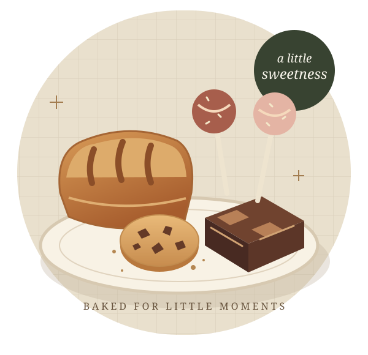

Mini loaves
A little loaf, a lovely addition to your table. Contact Sierra's for the latest selection.
Small bakes. Big occasion.INDEPENDENT WEBSITE CONCEPT BY MULTIMAX · NOT THE OFFICIAL BUSINESS WEBSITE
COTTAGE-BAKED IN NICHOLASVILLE, KY
Sierra's Baked Goods brings handcrafted treats to local pop-ups, celebrations, and everyday gatherings.
Custom party orders · Local pop-ups · Meet-up deliveries

FROM THE BAKERY TABLE
Explore a few of Sierra's publicly featured specialties. Ask the bakery about current flavors, availability, and custom requests.
A little loaf, a lovely addition to your table. Contact Sierra's for the latest selection.
Small bakes. Big occasion.A chocolate-focused favorite from the bakery's publicly featured lineup.
Find your next sweet treat.Handcrafted event favors and custom party orders. Share your occasion directly with the bakery.
For moments worth celebrating.This concept is a showcase, not a live menu. Flavors, pricing, allergens, and order dates must be confirmed with Sierra's.
LOCAL ROOTS, SWEET CONNECTIONS
Based in Nicholasville, Sierra's Baked Goods is a locally operated cottage bakery taking part in vendor events and pop-up booths.
The bakery's public listing offers custom orders and local meet-up deliveries in Wilmore, Nicholasville, and south Lexington. Connect directly to arrange the details.
Meet Sierra's on NextdoorLET'S TALK TREATS
For custom requests and the latest pop-up news, reach Sierra's through its public business channels.
Inquiries open your email app. This demo does not accept orders or payments.